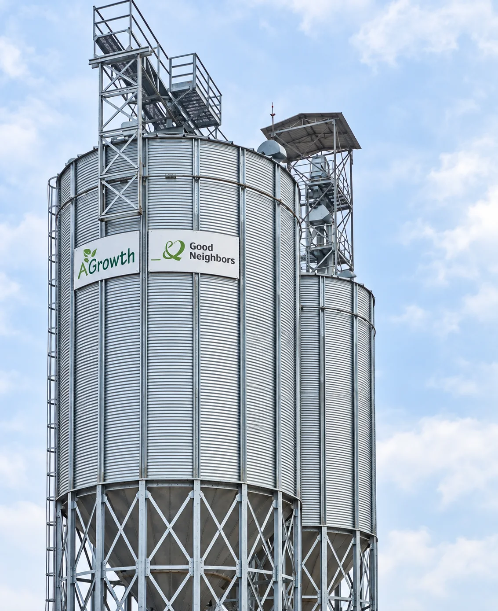
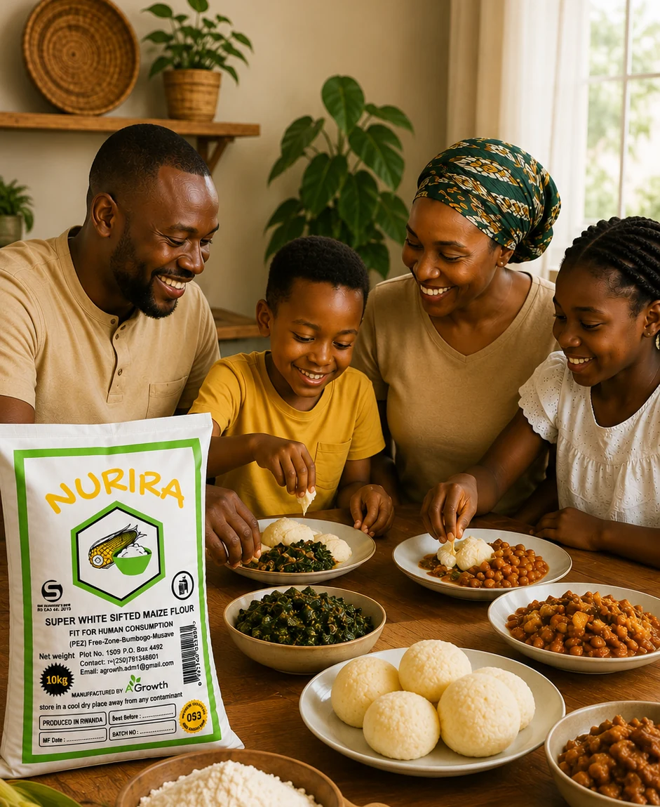

Integrity in Sourcing
We work directly with Rwandan farmers, ensuring fair practices and the highest quality local maize for our milling process.
AGrowth Ltd is a Rwandan social enterprise dedicated to improving local nutrition through sustainable maize processing. Based in Kigali, we operate at the intersection of agriculture and industry, bridging the gap between local farmers and the high-quality flour needs of institutions and wholesale partners across the country.
Our brand, NURIRA, signifies nourishment. By utilizing advanced milling technology and adhering to rigorous safety standards, we produce maize flour that is as pure as it is nutritious, supporting the well-being of Rwandan families and the growth of the national economy.

Empowering local farming communities and enhancing national nutrition
by transforming Rwandan maize into premium, iron-fortified flour.
We are committed to health, sustainability, and social impact from field to table.

To become Africa's leading model for sustainable agro-industrial processing, where every grain of maize harvested in Rwanda contributes to a future of zero hunger and thriving rural economies. We envision a world where high-quality nutrition is accessible to all, powered by innovative milling technology and deep-rooted community partnerships.
NUTRITIONAL EXCELLENCESetting the gold standard for fortified maize products in the East African region.
SOCIAL IMPACTEmpowering 10,000+ local smallholder farmers through fair pricing and technical support by 2030.
Deeply rooted in the fertile landscapes of Rwanda, our journey began with a vision to revolutionize the local maize industry. In our early years, we focused on establishing a state-of-the-art milling facility right in the heart of Kigali, ensuring that the essence of Rwandan agriculture was captured in every grain of flour we produced.
Today, AGrowth Ltd has evolved into a leading agro-industrial social enterprise. We don't just process maize; we nourish communities. By partnering with local institutions and wholesale distributors, we ensure that premium, nutrient-rich NURIRA flour is accessible to all, driving sustainable agricultural growth across the entire region.
Our core values are the foundation of everything we do,
from sourcing grains to distributing NURIRA flour across Rwanda.
We work directly with Rwandan farmers, ensuring fair practices and the highest quality local maize for our milling process.

Our mission is to nourish lives by providing fortified, premium-grade maize flour that promotes community health and well-being.

As a social enterprise, we reinvest in local agriculture and sustainable infrastructure to build a stronger Rwandan economy.